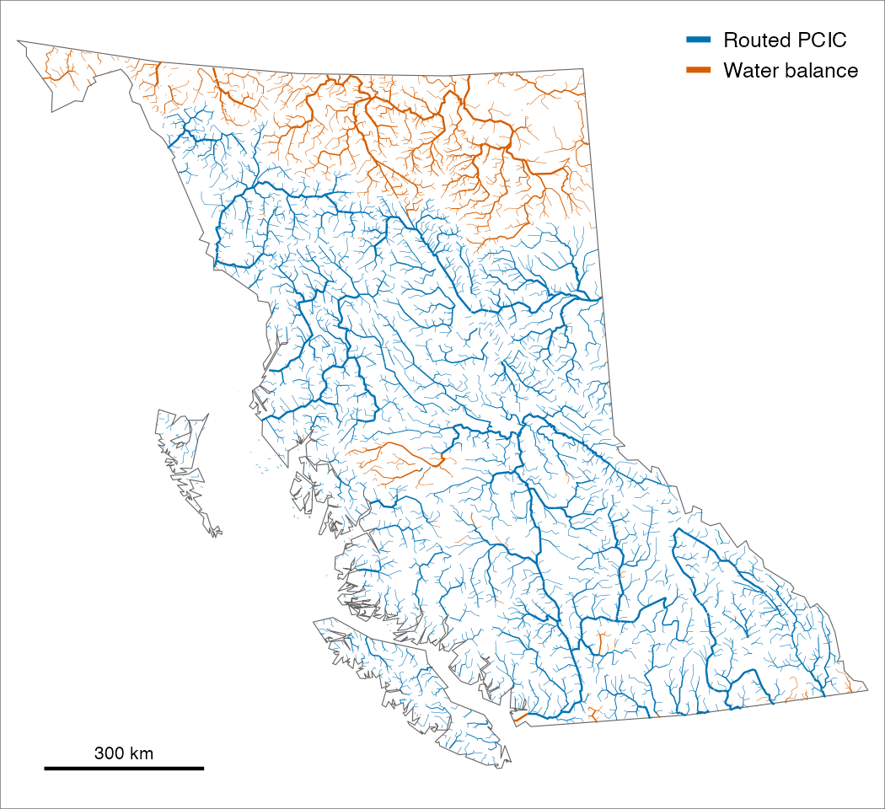
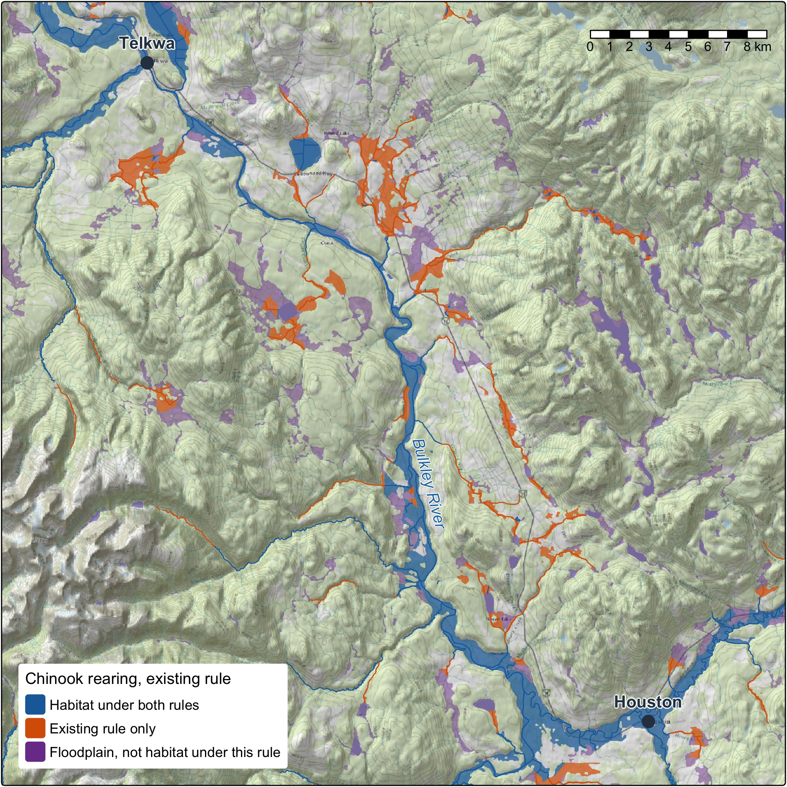
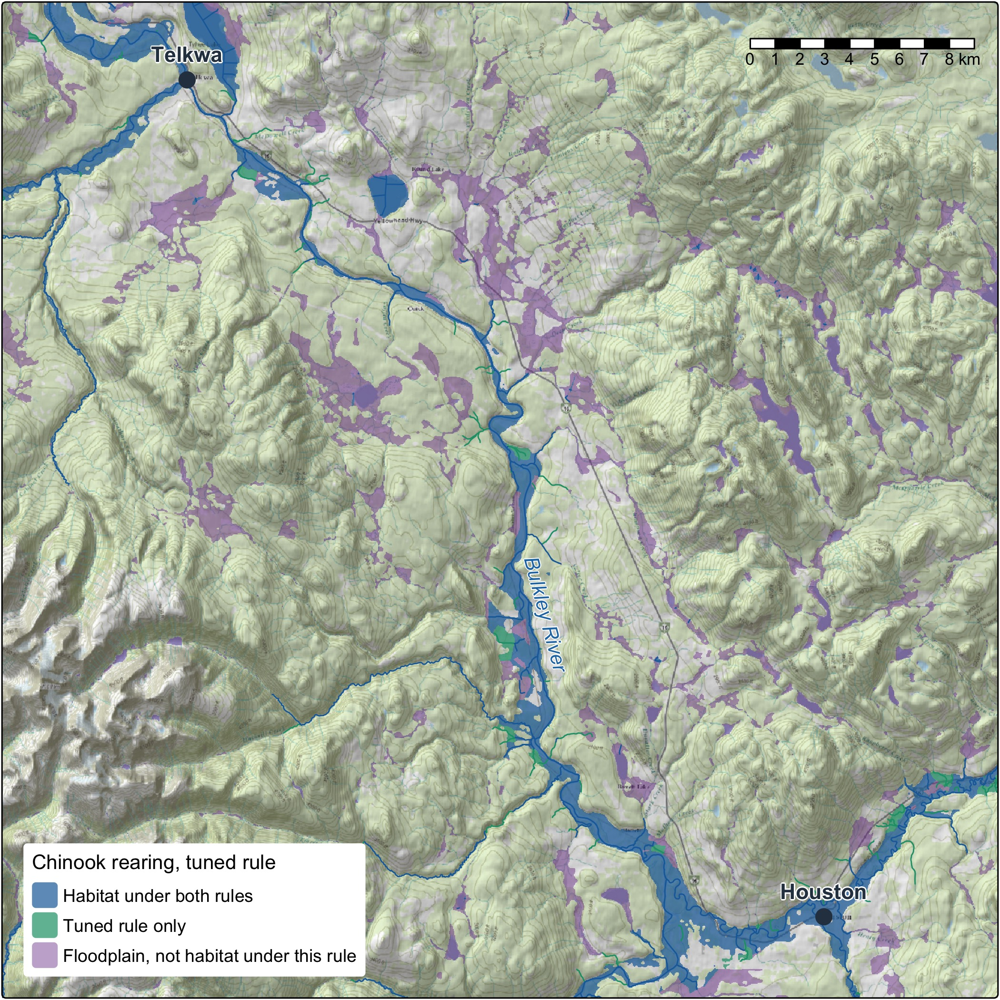
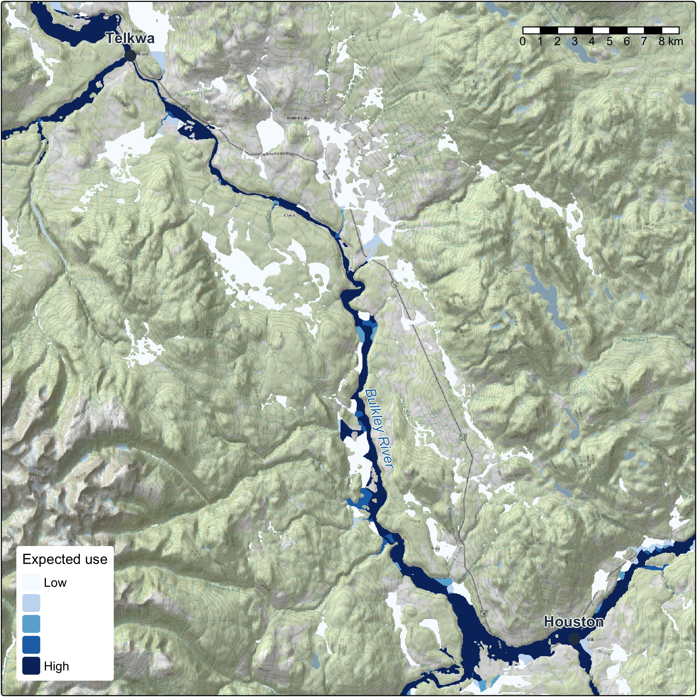
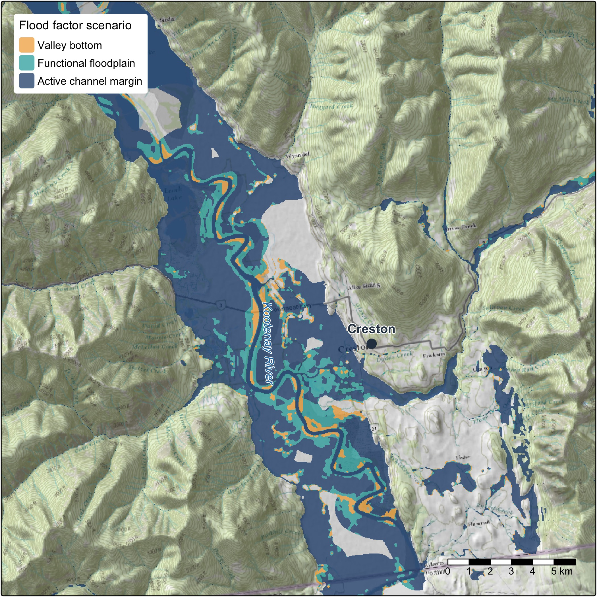
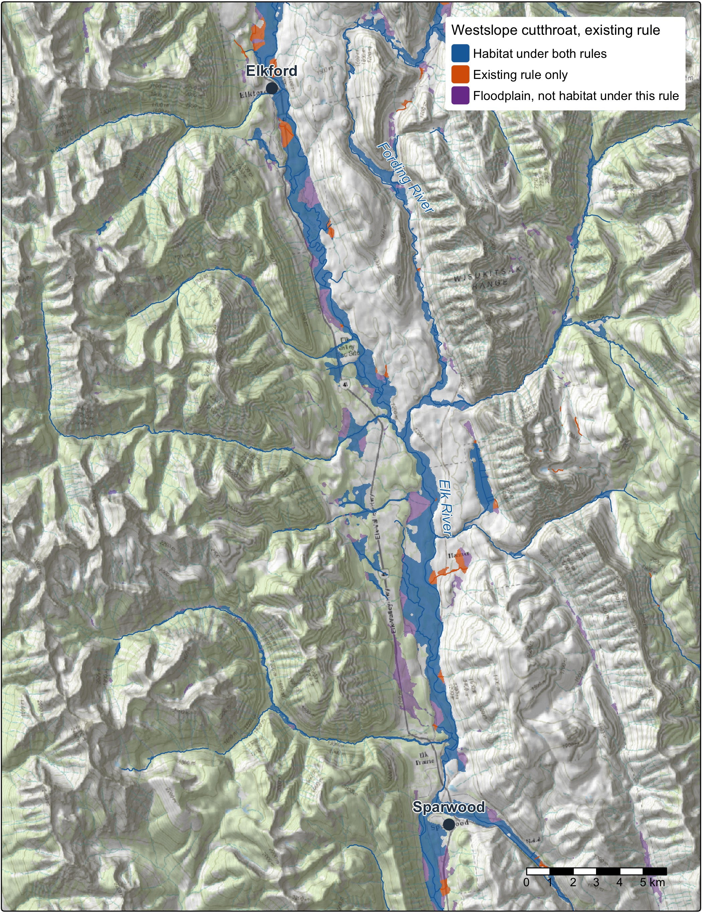
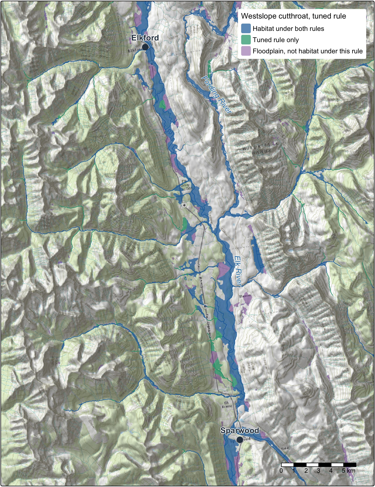
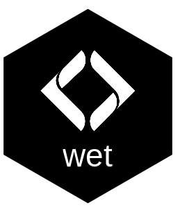
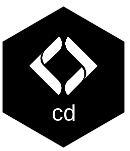
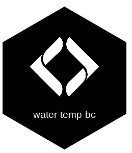

flowchart LR EV["Fish evidence<br/>surveys across<br/>the province"] --> TEST LIT["Priors: life history,<br/>biology, published<br/>thresholds"] -. what to expect .-> RULE RULE["A fish habitat<br/>definition, stated"] --> TEST FLOW["Flow on almost<br/>every stream, open<br/>and on the Atlas"] --> TEST STEADY["Held steady:<br/>network, flows,<br/>records, code"] --> TEST TEST(["Scored on watershed<br/>groups held out<br/>of the fit"]) --> LINE["Habitat on<br/>the stream line"] LIT -. read against .-> LINE LINE -. joins .-> FP(["One floodplain,<br/>keyed to its streams"]) HEALTH["Wetlands, forests,<br/>canopy structure,<br/>change, climate"] -. joins .-> FP FP --> AREA["Areas for conservation,<br/>restoration and<br/>policy planning"]
From fish evidence to floodplain planning
Decisions about where to protect, restore, offset and monitor rest on fish habitat definitions: how steep a stream a fish will use, how small, how far from a larger river. We start from what is known about each species: its life history and biology, the flows it depends on and the published work. Then we test the habitat definitions the way science tests anything. Our open tools hold the stream network, the flows and the fish records steady, change one habitat definition, and score it on watershed groups it was not fitted to, from tens of thousands of fish surveys across the province. Every result records how it was made, so anyone can check it, rerun it and build on it.
Then the habitat definition comes off the stream line and onto the ground. It joins one floodplain, drawn group by group from the whole stream network and published, built to sit beside the wetlands, the largest cottonwood and mixed forests, the structure of the canopy and the changes on the land. That gives people modelled areas to plan conservation, restoration and policy on, and a habitat definition can change without redrawing the ground under it. The work is in the open and moving, and we want to shape what comes next with the people who use it.
How habitat mapping is tested and reaches the ground
Testing habitat models with fish sampling records
- State the habitat definition, and what the biology leads us to expect. Westslope cutthroat rear in streams below X % gradient, above Y m wide, within Z km of a larger river. Each species’ life history and the published thresholds, kept as cited quotes checked against their sources, say what a habitat definition should look like before any fish record is scored.
- Hold everything else steady. One stream network, one set of flows, one set of fish records, one version of the code, each recorded so a run can be traced to exactly what went in.
- Test it on fish it has not seen. Tens of thousands of electrofishing visits across the province (Province of British Columbia 2022), each one a fish caught or not caught. Habitat definitions are scored on whole watershed groups held out of the fit. The model accounts for how much stream was fished, which data set a record came from, its period and its group, so a habitat definition is not credited for a difference in sampling.
- Compare before and after. The tested habitat definition sits beside the current one on the same network: which streams change, by how many kilometres and hectares, and whether the choice holds when the groups are split other ways. The result is read against what the literature led us to expect. Where the evidence cannot decide, the method says so, and that shows where the next sampling belongs.
- Document it so it can be rerun. Every setting that shapes a result sits in one register, and a test fails if it and the code disagree. Published figures are computed from the tables. Nothing is promoted until a person signs off.
Biology, fish surveys and stream flow: three lines of evidence
The test does not rest on any one dataset. Priors come first: each species’ life history and biology, and the published thresholds. Fish surveys test those priors, and flow is what the habitat definitions read. Where they agree a habitat definition stands on all three, and where they part is the place to look next.
Predicting flow on almost every stream in the BC Freshwater Atlas
Fish live by water, so the habitat definitions read flow. wet estimates how much water flows in almost every stream in British Columbia, month by month, tied to the Freshwater Atlas stream by stream, and publishes it openly so anyone can read it (Irvine 2026f). That lets a habitat definition set a real flow floor rather than a proxy for one, ask how far a stream sits from a river of a given size, and read flow in the weeks a life stage needs it.

Joining fish habitat to floodplain mapping
Habitat is modelled on the stream line, and people plan on the ground. So we do not cut a floodplain to fit each habitat definition. We draw one floodplain from the whole stream network of the Freshwater Atlas (FLNRORD 2021), using valley confinement (Nagel et al. 2014; Hall et al. 2007), and key every cell to the stream it belongs to, and habitat joins to it: each cell takes the nearest segment on its own stream.
That changes what a new question costs. A new habitat definition, another species, or one from a partner or a recovery team is a new join on the same ground. Two habitat definitions compare hectare for hectare, in floodplain hectares and in hectares weighted by how likely fish are to use them, as well as in kilometres.



Floodplain and riparian health metrics to inform conservation and restoration
A floodplain holds more than its habitat line. The same ground is where the conservation and restoration puzzle comes together:
- Where the value is. Wetlands, the ponds beavers make, and the forests that shade the water, hold the banks and drop wood into the channel. Tying the floodplain to the vegetation resources inventory lets us key in on its largest cottonwood and mixed forests.
- How it is doing. Lidar point clouds show the forest’s structure, through canopy height and rumple, how uneven the canopy surface is. Land-cover change shows where the floodplain is shifting and what mapped fire, harvest or other layer overlaps it. How far the local climate has moved can sit beside both.
- Whatever comes next. Any other mapped layer, from ecosystem type to protected areas, is one entry in a settings file, not new code.
The design is one floodplain, a modelled screen of where to look, so the same ground points to where to protect, where to restore and what policy should cover, for the people who know the place to weigh. The areas add up from a reach to a region.
Options for the terrain and spread of water in floodplain modelling
The floodplain is a model, and it is built to be steered:
- The terrain under it: any elevation model works: the national 30 m one, provincial lidar, or one built from the point clouds. Ordinary drones are the next step on that path, with proofs of concept for their elevation models and point clouds and for tying them to the lidar.
- How far it reaches: from the active channel margin to the whole valley bottom.
- How it is drawn: the parameters in flooded, which keeps improving as what we need and what we know move.

Within one comparison the floodplain is held fixed, like the network and the flows, and its checksum and run record say which one it was. Changing it is a before and after of its own.
Stream temperature and water quality
The method works the same whichever variable it tests. Stream temperature is well on its way: station records in water-temp-bc, gap filling and degree days in wet, and weekly stream temperature modelled with Poisson Consulting in the Nechako and the Skeena (Hill et al. 2024; Hill et al. 2025). Temperature on every segment, validated on held-out sites, takes it through the same test. Water quality and habitat degradation follow the same path: hold the network and the fish evidence steady, change one variable, score it on held-out data and show the before and after.
Chinook and westslope cutthroat: visualizing what the evidence supports
The same steps apply to each species tested, and two of them show what the method does when the evidence can carry a change and when it cannot.
Where the evidence can carry a change, it names a new habitat definition. For chinook rearing the fish records support a different habitat definition from the current one. The chinook rearing article walks through it: the candidate habitat definitions, the choice, and whole runs compared stream by stream.
Where the evidence is thin, the method says so. The Pacific populations of westslope cutthroat are listed under the Species at Risk Act, so a fish habitat definition for them has to stand on its evidence. The chain records where the evidence leans and says how weak that lean is, and the habitat definition applied stays as it is until the evidence can carry a change. The next step strengthens it: resident populations above falls and steep reaches define much of this species’ range, so they come in where an independent fish record shows a population, and a survey never counts only because it caught fish.
How streams are cut into segments is the next thing to test. Tuning on a network with fewer cuts means the place a fish was caught stops shaping the gradient that scores it, and it shows how much the cuts move a habitat definition. That starts with chinook rearing.


The tests go beyond a single stream-size cut-off. They cover gradient, channel width, discharge, and the distance from a site to the nearest larger river at a range of river sizes, with flows from more than one model. That is how a stream’s position in its network shapes its use.
A future of recovery, restoration, auditable offsets and effectiveness monitoring
- Species at risk recovery: habitat definitions with stated confidence, to support critical habitat identification and recovery actions.
- Watershed security: habitat definitions tied to stream flow and to the connections between small streams and large rivers show which habitat depends on which flows.
- Conservation and restoration planning: habitat kilometres and floodplain hectares from tested habitat definitions, beside the largest forests and the condition of the ground.
- Habitat offset accounting: gains and losses measured with the same tools, before and after, with every input versioned, so the accounting can be audited.
- Monitoring: new surveys, new flows or a new network rerun the same chain and show what changed and why.
The packages and catalogues behind the work
All of it is open code, and each run keeps a record of what it did.
| fresh. The stream network engine (Irvine 2026c) on the BC Freshwater Atlas, through fwapg. It places surveys on streams, walks the network and applies fish habitat definitions. | |
| link. Habitat and access for each species across the province, from configurable habitat definitions (Irvine 2026e), reproducing the approach of bcfishpass (Norris 2024). | |
 |
wet. Modelled stream flow, and water temperature at stations (Irvine 2026f). |
| knowledge. The evidence and the testing (Irvine 2026d). It holds the cited literature and life histories, assembles the fish records, tunes and compares habitat definitions, and publishes the results with their provenance. Its methodology article is the reference for how a habitat definition is tested. | |
| flooded. Draws the floodplain from terrain and joins habitat to it by position (Irvine 2026b). | |
| drift. What changed on the floodplain and when, from land cover (Irvine 2026a). | |
 |
cd. How far the climate has moved, over any area. |
| fly. Historic airphotos, the baseline that shows what to restore toward: a story of its own. | |
 |
water-temp-bc. Stream temperature records from stations across the province. |
floodplains runs link, flooded and drift over a watershed group from one config per area. Each run’s record answers two questions separately: did the same ingredients go in, and did the same result come out.
Our catalogues, searchable by place and time:
The ground under the trees, found by place, rebuilt monthly.
The raw lidar points, for canopy height, elevation models and comparing flights, rebuilt monthly.
Mapped floodplains, and how the land in them changed: the floodplain fish habitat definitions join to.
Historic airphotos, findable by place: what to restore toward.
Our drone flights: imagery and elevation models, before and after the work.
Basemap on the maps: Esri World Topographic Map and World Shaded Relief.
The Open Source page has the current tools and catalogues.
Collaboration for what comes next
This work is in progress and built in the open, and we want to shape where it goes with the people it affects.
Working with First Nations means their priorities shape the work and their knowledge stays theirs. Provincial and federal managers can check a habitat definition, rerun it and tell us what recovery and offset work need from it. Restoration and stewardship groups know their streams, and their surveys and their read of a habitat definition are what sharpen it.
The tools keep moving as the evidence and the questions do. Choosing which habitat definition, which flows and which floodplain fit a question on a real river is where the work is, and that is the part we would like to do with you.
References
Chapman, Allan R., Ben Kerr, and David Wilford. 2018. “A Water Allocation Decision-Support Model and Tool for Predictions in Ungauged Basins in Northeast British Columbia, Canada.” Journal of the American Water Resources Association 54 (3): 676–93. https://doi.org/10.1111/1752-1688.12643.
Craig, James R., Genevieve Brown, Robert Chlumsky, et al. 2020. “Flexible Watershed Simulation with the Raven Hydrological Modelling Framework.” Environmental Modelling & Software 129 (July): 104728. https://doi.org/10.1016/j.envsoft.2020.104728.
FLNRORD. 2021. “Freshwater Atlas Stream Network - Data Catalogue.” Published by Ministry of Forests, Lands, Natural Resource Operations and Rural Development. https://catalogue.data.gov.bc.ca/dataset/freshwater-atlas-stream-network.
Hall, Jason E., Diane M. Holzer, and Timothy J. Beechie. 2007. “Predicting River Floodplain and Lateral Channel Migration for Salmon Habitat Conservation.” Journal of the American Water Resources Association 43 (3): 786–97. https://doi.org/10.1111/j.1752-1688.2007.00063.x.
Hill, N. E., J. L. Thorley, and A. Irvine. 2025. Spatial Stream Network Analysis of Skeena Watershed Stream Temperatures 2025. Analytic Appendix. Poisson Consulting. https://www.poissonconsulting.ca/analyses/skeena-stream-temp-25/.
Hill, N. H., J. L. Thorley, and A. Irvine. 2024. Spatial Stream Network Analysis of Nechako Watershed Stream Temperatures 2022b. Poisson Consulting Analysis Appendix. https://www.poissonconsulting.ca/analyses/fish-passage-22b/.
Irvine, Allan. 2026a. drift: Detecting Riparian and Inland Floodplain Transitions. New Graph Environment Ltd. https://doi.org/10.5281/zenodo.23372090.
Irvine, Allan. 2026b. flooded: Map Floodplains from an Elevation Model and a Stream Network. New Graph Environment Ltd. https://doi.org/10.5281/zenodo.23302790.
Irvine, Allan. 2026c. fresh: Freshwater Referenced Spatial Hydrology. New Graph Environment Ltd. https://doi.org/10.5281/zenodo.23524744.
Irvine, Allan. 2026d. knowledge: Fisheries Evidence and Tuned Habitat Thresholds for BC Watershed Groups. New Graph Environment Ltd. https://newgraphenvironment.github.io/knowledge/.
Irvine, Allan. 2026e. link: Develop, Test and Communicate Intrinsic Habitat and Connectivity Models for the BC Freshwater Atlas Stream Network. New Graph Environment Ltd. https://doi.org/10.5281/zenodo.23264990.
Irvine, Allan. 2026f. wet: Stream Flow and Water Temperature for the BC Freshwater Atlas. New Graph Environment Ltd. https://doi.org/10.5281/zenodo.23305781.
Nagel, David E., John M. Buffington, Sharon L. Parkes, Seth Wenger, and John R. Goode. 2014. A Landscape Scale Valley Confinement Algorithm: Delineating Unconfined Valley Bottoms for Geomorphic, Aquatic, and Riparian Applications. U.S. Department of Agriculture, Forest Service, Rocky Mountain Research Station. https://www.fs.usda.gov/rmrs/publications/landscape-scale-valley-confinement-algorithm-delineating-unconfined-valley-bottoms.
Norris, Simon. 2024. bcfishpass. https://github.com/smnorris/bcfishpass.
Norris, Simon, and Allan Irvine. 2026. fwapg, newgraph branch. New Graph Environment Ltd. https://github.com/NewGraphEnvironment/fwapg/tree/newgraph.
Province of British Columbia. 2022. “Fisheries Data Information System (FDIS) Electrofishing Extract.” Electrofishing extract, exports of 2020-11-16 and 2022-03-22.
Schnorbus, Markus A. 2018. VIC-Glacier (VIC-GL): Description of VIC Model Changes and Upgrades. Pacific Climate Impacts Consortium, University of Victoria. https://hdl.handle.net/1828/21631.